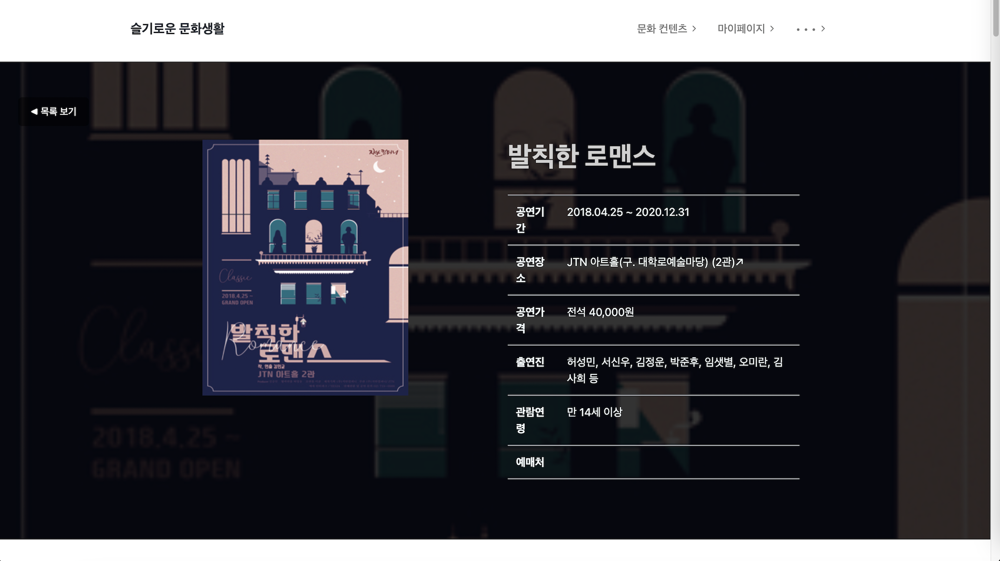
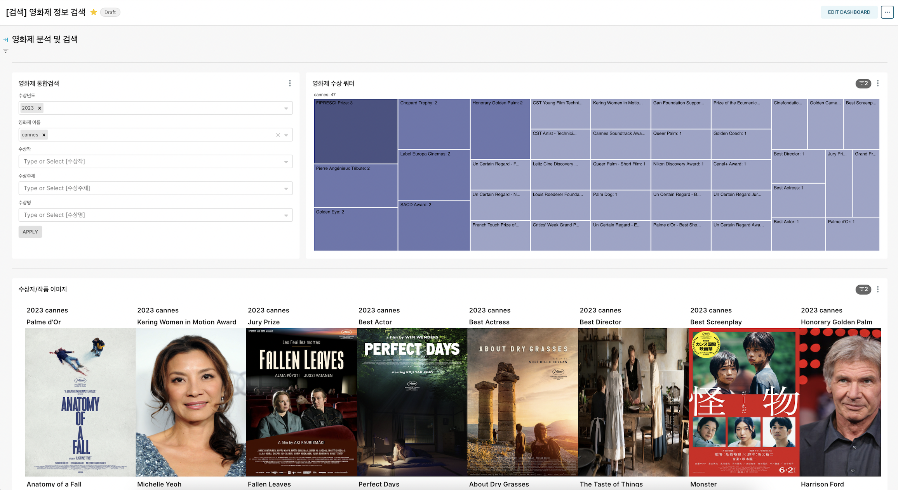

프로젝트 소개
Problem
문화생활 카테고리에서 많은 부분을 차지하는 영화 & 공연 컨텐츠 수가 증가함에 따라 현명한 소비가 불가능했습니다.IMDB,네이버 등 산개되어져있는 정보를 모아 보다 현명한 컨텐츠 소비를 할 수 있게 돕는 서비스가 필요했습니다.
국내 공연 및 전세계 영화 및 영화 관계인 정보를 한눈에 볼 수 있는 정보 백과사전 웹 서비스 및 데이터를 통한 새로운 BI 대시보드 구현에 목적을 두었습니다.
- 각종 서비스(인터파크, watachpedia, 대형포탈 영화 검색) 통합
- 영화 & 공연 데이터를 기반으로한 다양한 BI 의 부재
Solution
API, Crawling을 통하여, IMDB, TMDB, KOBIS 등 산개되어있는 데이터를 통합하여, 해당 문화생활에 전반적인 정보 통합 대시보드 구축서비스 데이터
- 700,000+ 이상 70년+ 영화 정보- 영화관계인 4,000,000 + 명
- 실시간 박스오피스 통계 5년
- 공연 60,000+ 편
- 60년+ 국제 영화제 수상 통계
주요기능
- 영화 & 영화관계인 & 공연 정보검색- 공연 예매 링크 통합 중계
- 데이터를 기반으로한 다양한 BI 제공
- 티켓파워가 아닌, 전체 박스오피스 순위 및 지표통계
프로젝트 아키텍처 & 기술스택
집중 기술 스택
개발 과정
GITHUB : Github로 이동합니다팀원 : 6명
역할 : [PM] 시스템 아키텍처 & 데이터 전처리

도전과제
- 팀원과 긴밀한 커뮤니케이션이 프로젝트의 성공을 결정 한다생각합니다.
교육 기간 특성상 처음 협업하는 팀원들과 한정된 3주 시간 내에 프로젝트를 완료했고 각자 다른 역할을 맡아 개발과 동시에 긴밀한 커뮤니케이션을 하기 위해, 일일 칸반 및 코드 리뷰 등 다른 업무에 대한 이해도를 높이는 장치를 도입했습니다.
- 40GB 용량의 6백만 개 텍스트 데이터를 10일 내외로 전처리 하는 것이 문제였습니다.
Cloud 환경에 구축한 스파크 서버를 onPremise 스파크 서버로 전환해(전환기 : 보러가기) 기존 서버 대비 약 5배 이상 성능을 향상하고 원천 데이터 파티셔닝 재정의를 통해 File I/O를 최소화하였습니다.
소모되는 리소스양을 기반으로 한 스레드 병렬처리, 이터레이션 구간 데이터 최소화, 캐싱 등 다양한 기법을 직접 A/B테스트하며 (Spark 리팩토링 : 보러가기) 기존 코드 대비 약 70% 이상 처리 속도를 개선해 기간 내 벌크 데이터 처리를 할 수 있었습니다.
- onPremise 스파크 서버 환경 특성상 고정 IP를 할당할 수 없었고 해당 도전과제의 가장 큰 요구사항은 이미 완성된 시스템은 수정하지 않는 것이였습니다.
Airflow가 스파크 서버와 통신하기 위해, VPN을 활용한 그룹화된 네트워크로 구현했습니다. 또한, VPN ON/OFF 스위치 Operator를 구현하여, 유연하게 네트워크 그룹을 변경(개발기 : 보러가기) 할 수 있었습니다. 비정상 동작을 방지하고자 IP 확인 후 오류를 대처할 수 있는 분기 플래그 생성 및 시스템 서비스 재시도 등을 통해 변경되는 네트워크에 안정성을 부여했습니다.
- 비용 제한으로 인해 AWS RedShift에 직접 데이터를 적재할 수 없는 상황에서, 처리가 완료된 데이터를 Parquet 형태로 임시 보관 후 DuckDB 엔진을 활용하여 MySQL 메타스토어에 데이터를 적재함으로써 RedShift대비 저렴한 비용으로 Warehouse를 구축하여 문제를 해결했습니다.
결과물
웹서비스 사진


내부 BI 대시보드 사진

인사이트
배운점
- 프로젝트의 전반적 이해 & 프로젝트 성공을 위한 커뮤니케이션 능력- 목표에 적합한 요구사항 수립 및 개발
6명의 팀원과 함께 프로젝트를 진행하기위해, 칸반을 도입하여, 매일 칸반미팅을 진행하였으며, 오픈소스(Airflow Git)를 참고하여, 코드리뷰, 문서화, 이슈, 프로젝트 등 프로젝트 진행방식의 모든부분에 이해하게되었으며, SMS프로젝트도 Git을 적극적으로 활용하였습니다.
전 프로젝트 (I'm Scouter)의 아쉬운점인 세분화된 스테이징을 하지 못한 점을 개선하기위해 개발 - 테스트 - 배포 별 서버를 구축하여 스테이징을 할 수 있었습니다.
마지막으로, 코드를 작성해 파이프라인을 만드는 것 뿐만 아니라, 해당 데이터의 성격 & 처리방식에 따라, 파이프라인 아키텍쳐를 고민해야한다는 점을 알게되었습니다. 프로젝트 진행중 생기는 어려운 점을 두려워하지 않고 요구사항을 빠르게 수립하고 유연한 개발을 함으로써 제한된 리소스내에 빠르게 개발하여 문제해결하는 방법에 대한 자신감이 생겼습니다.
아쉬운점
- 컨텐츠 제작자 전용 BI 구축SMS 프로젝트에 구축된 BI는 문화생활을 소비하는자에 국한된 BI 입니다.컨텐츠 배급사, 제작사에게 월별, 시즌별 경쟁영화 없이 해당 컨텐츠의 수익 극대화, 세부 장르 군집화를 통한 새로운 트렌드 장르(예시 : 90년대 한국나들이)를 제공하고싶습니다.
- 데이터 관리방식의 변환
슬기로운 문화생활 프로젝트 데이터는 중앙 집권 처리방식을 고수하고있습니다. 따라서 도메인별 데이터가 분리되지 않는 중앙 집중형 데이터 관리 방식을 파이프라인 아키텍처 플랫폼화를 통해 공연과 영화 데이터 파이프라인을 분리하여 데이터 매시를 구축해 각 도메인에서 주체적으로 관리하고 나아가 고품질 데이터 파이프라인을 만들고 싶습니다.
프로젝트 기획서 : 다운로드
운영 & 개발 PPT : 다운로드